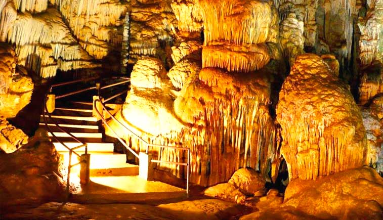
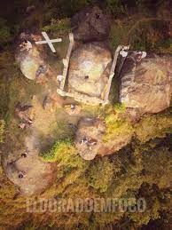

Caverna Do Diabo
Caverna do Diabo é uma caverna existente no Parque Estadua l Caverna do Diabo, município de Eldorado. É a maior caverna do Estado de São Paulo Descoberta por pesquisadores há mais de 100 anos, já era conhecida e utilizada por indígenas e quilombolas há séculos, cuja história é povoada pelas mais incríveis lendas
Cachoeira do Sapatu
.jpg)
Pequena queda d’água, a Cachoeira do Sapatu tem mais ou menos quatro metros de altura e que forma uma linda piscina natural, ideal para banho e grupos de até 20 pessoas. Tem acesso pela estrada que liga Eldorado à Caverna do Diabo à cerca de 35 km do centro da cidade, e está localizada em uma propriedade particular, onde se pode deixar o carro e em seguida caminhar por uma pequena trilha de 150 metros.
Mirante Do Cruzeiro
O Mirante do Cruzeiro é uma montanha com 510 metros de altitude, de onde é possível avistar o mar, toda a cidade de Eldorado e outras cidades do Vale, além do sinuoso curso do rio Ribeira .Para chegar ao topo, percorre-se uma trilha de aproximadamente um quilômetro e meio, com trechos mesclando entre média e forte inclinação. O topo é aberto, quase sem vegetação, e com rochas expostas, o que facilita a visualização da paisagem em todos os ângulos. Com frequência, pode-se observar a fauna da região.